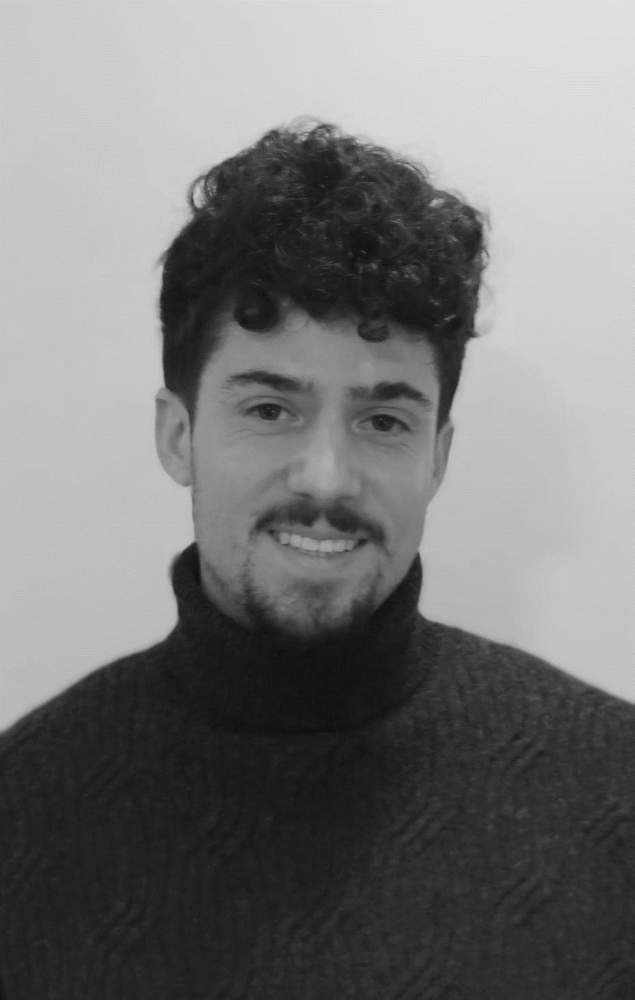

Welcome to my portfolio
Formación
Máster en Ingeniería de Caminos, Canales y Puertos
Escuela Técnica Superior de Ingeniería (ETSI), Universidad de Sevilla (2015 - 2020)
Grado en Ingeniería Civil - Construcciones Civiles
Escuela Politécnica de Cáceres, Universidad de Extremadura (2011 - 2015)
Experiencia Profesional
Ingeniero de Caminos, Canales y Puertos. Fhecor, Ingenieros Consultores
(enero 2018 - actualidad)
- Coordinador de la campaña de inspección especial del puente del Centenario, en Sevilla.
- Asistencia técnica a la dirección de obras de proyectos de reparación de puentes.
- Redacción de proyectos de reparación y nueva construcción de puentes.
- Cálculo de puentes de vigas
Prácticas extracurriculares. Ambling, Ingeniería y Servicios S.L
(junio 2015 - agosto 2015)
- Estudio de clasificación en función del riesgo potencial de balsas de regadío.
Competencias Informáticas
- SAP2000
- OFFICE
- FAGUS
- CEDRUS
- STATIK
- PRESTO
- EPANET
- SWMM
- AUTOCAD